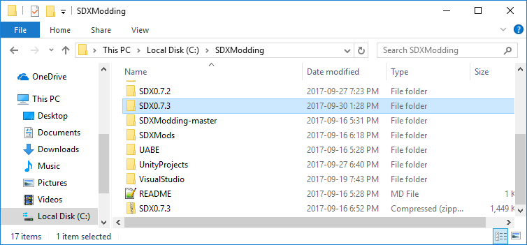
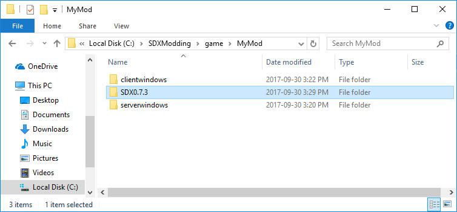

To isolate your SDX work even further, you may make a copy of your SDX folder.
In the SDXModding folder, copy your current SDX0.7.x folder, and paste it into your SDXModding\Game\MyMod\ folder


Created with the Personal Edition of HelpNDoc: Free iPhone documentation generator